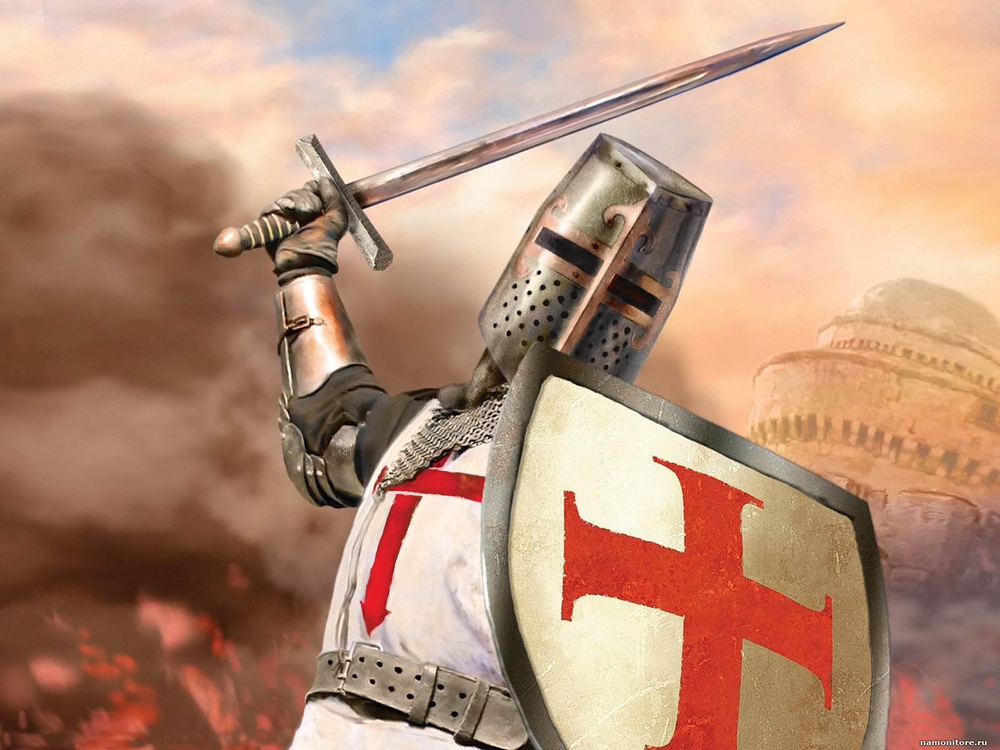

The crusades was a series of relous wars.
The whole purpose of them were to claim the holy land back from the muslims.
The holy land is important for many religous groups. In some cases so important that it is the centre of some maps.
Here is some reason why certain relious groups would join the crusades:
>>>The Jewish people wanted to control Jerusalem because it was the site where King Solomon built the original temple to God.
>>>The Christian people wanted to control Jerusalem because it was the site where Christ was crucified and rose from the dead.
>>>The Muslim people wanted to control Jerusalem because it was the site where Muhammad ascended into heaven.
